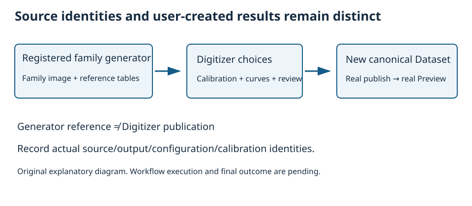
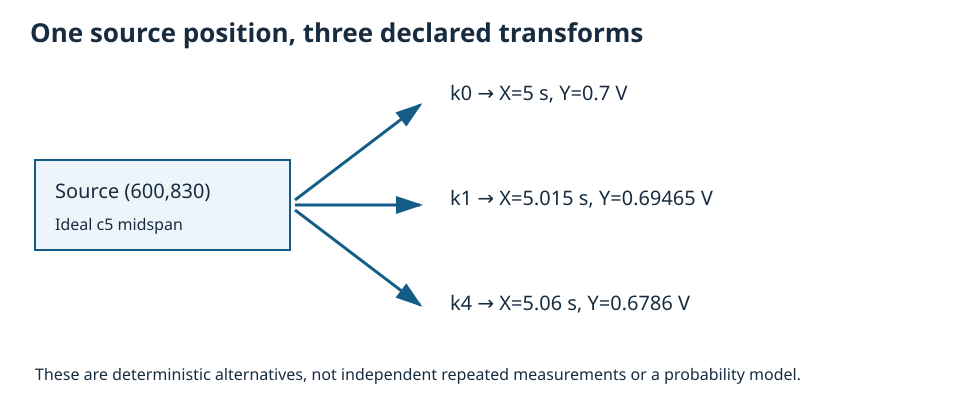
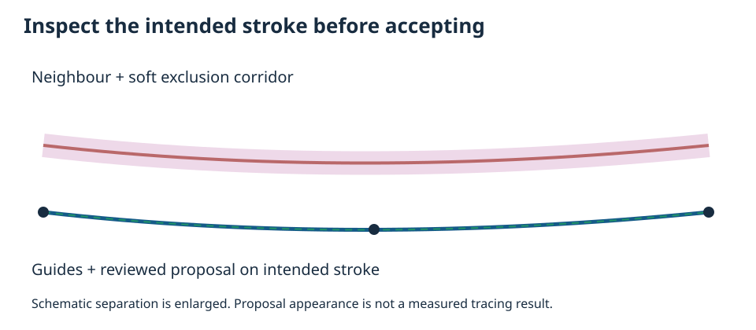
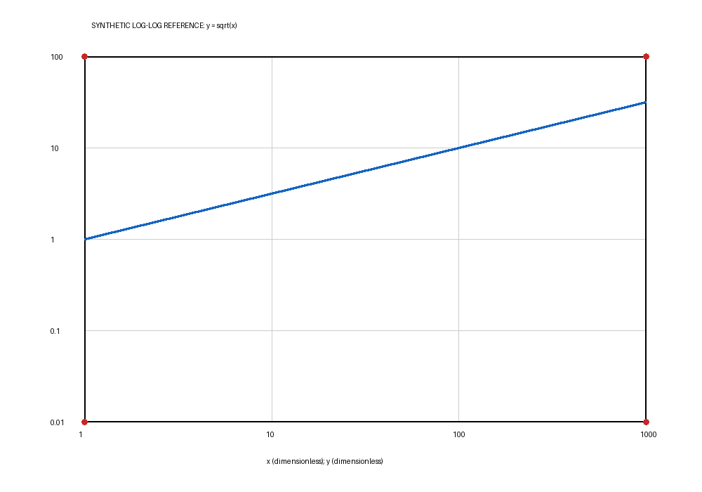

1. Generate a fresh Session normally
Use a GX-TXT installation offering unchanged Digitizer 2.0.9, Image importer, compatible grouped curve Preview and the registered generator calibrated_curve_family in library org.giuxlab.gxtxt.numerical_examples. The source baseline is the actual deposited dev110; installed dev111 behavior requires real execution.
- In common Guides open this tutorial and choose the admitted native Open Generate Session… button. It preselects the exact pair; it does not create a Session.
- From an ordinary browser, use GX-TXT’s normal New Session / Generate Session dialog and select that library/generator manually.
- Choose an unused name such as
tutorial02_family, Location and Project. Turn Copy previous Experiment documentation off. Review the choices, then press the ordinary Generate control. - Record actual versions and Session path. If the pair is absent, disabled or unavailable, retain the diagnostic and stop; no bundled private generator or automatic installation is provided.
The generator’s teaching notes and tables are source references. A real Digitizer publication must be created later. Use the common Guides entry alongside unchanged vendor Help/F1; this package does not replace that original behavior.
2. Read the independent family reference
Inspect calibrated.family.image, expected size 1201 × 1001. calibrated.family.raw contains 50 source curves with 300 points each (15,000 rows); calibrated.family.source contains five declared calibration realizations for those curves (75,000 rows, 250 curve/calibration groups). Confirm actual schema/identities instead of identifying data by title alone.
For source curve index c = 0…49, sample i = 0…299, and t = i/299, the independent continuous design is:
px = 100 + 1000t py = 900 − 14c − 8(2t − 1)² x = (px − 100)(1 + k/1000)/100 + k/100 y = (900 − py)(1 − k/2000)/100 − k/200
Here k = 0…4. X is in seconds, Y in volts; the dimensionless family parameter equals c. The image has thin rasterized paths without calibration-corner markers. It is a family of shallow parabolas, not a sinusoid. The source generator’s curve keys and the Digitizer’s newly created curve IDs are different identities.

Use Namespace → Select Dataset namespace… to inspect All namespaces and an appropriate organizational branch. Namespace filtering is not a filesystem/Session Workspace change and does not rebind a saved configuration’s source. Choose Dataset → Refresh Dataset catalog and inspect revision/refresh status; the Dataset browser setting controls optional five-second revision checks. Restore All namespaces if a filter hides the source. Open the source Image Dataset with Digitizer through the ordinary Viewers route (expected tile Digitalizer, provider Curve Digitalizer; record actual labels) and create configuration Tutorial 02 — Family. Record its source hash/decoded size. Choose two curves: source c = 5 (curve-005, teaching name “Source curve 06”, family value 5) and c = 15 (curve-015, “Source curve 16”, value 15). Declare the family quantity “Source curve index”, unit 1, role family. Record the mapping to the two actual Digitizer curve IDs.
3. Create three explicit calibration realizations
Use Auto-calibrate full image with Upward (Cartesian) first. It supplies the exact full-image source-pixel corners (0,1000), (1200,1000), (0,0), (1200,0). Then enter the physical axis definitions and limits below. Automatic full-image calibration resets limits to pixels, so doing it after physical limits would erase those limits. Do not guess unmarked inner plot corners by eye.
| Name | k | X min / s | X max / s | Y min / V | Y max / V |
|---|---|---|---|---|---|
| Map k0 | 0 | −1 | 11 | −1 | 9 |
| Map k1 | 1 | −0.991 | 11.021 | −1.0045 | 8.9905 |
| Map k4 | 4 | −0.964 | 11.084 | −1.018 | 8.962 |
For each new measurement/calibration realization, repeat the full-image action first because a new realization has no corner set. Define Time, s, independent and Voltage, V, measured, both linear. Apply, verify an independent source position, then accept the valid realization. Record actual realization IDs and hashes.

On a temporary extra realization, exercise New, Activate, Reject/Accept as applicable and Delete after confirming its identity; cancel an unfinished edit and check the accepted maps remain. Do not delete k0, k1 or k4. Observe the difference between the active realization used for current coordinate display, acceptance state and the selected set used for publication. Rename a realization and confirm its human label changes without treating that as a new scientific identity. In a separate draft, enter an invalid limit pair, observe refusal and cancel; preserve the three accepted valid maps. Do not publish an invalid draft.
4. Guide, inspect and accept two traces
4A. Choose the two targets and guide their routes
In Configuration → Viewer settings… → Digitizing choose Monotonic in X and its matching Sort by X. Apply and confirm saved status only after verifying the intended traversal. This does not assert monotonic Y. Monotonic in Y selects Sort by Y; incompatible ordering clears monotonicity. None with an explicit sort is also available.
Create the two numerical-family curves with values 5 and 15. Source c5 has ideal endpoint py 822 and midspan py 830; c15 has endpoint py 682 and midspan py 690. Select the intended curve, choose Add guide, and place guides near px 100, 600, 1100 along the intended source path. Record actual curve IDs and guide positions: thin raster centres can differ from the continuous reference by rounding.
On c5 start Corridor at 6 source pixels, Step at 2 pixels and Trace image explicitly original. Record the actual settings. Keep any initial manual/accepted point count explicit before acceptance.
4B. Review proposals before accepting
- Propose and inspect the entire path at several zoom levels. Compare Off, Gentle and Strong smoothing on unaccepted proposals. Smoothness alone does not identify the intended stroke.
- On c5 inspect a per-curve exclusion path near neighbouring c6: ideal py 808 at endpoints and 816 near midspan, width 3 px. Review the soft penalty, path On state and global enable state.
- Edit an exclusion node, Undo/Redo and regenerate a stale proposal. Exclusions do not delete source pixels and are not hard barriers. Do not apply c5’s exclusion geometry as an unexplained rule for c15.
- Move a guide or use Edit proposal/Add correction point on the intended unaccepted interval. Inspect the resulting continuity. Context selection acts near that provisional point; right dragging empty space pans.
- Reject unsuitable proposals. Add correction point changes an uncommitted proposal, not a published point. Never accept a neighbouring-stroke jump just to finish.

4C. Accept each clean whole proposal deliberately
Output points (Accept) accepts 0 to retain proposal sampling, or 2…10000. A positive N is the number newly added by that acceptance, not the whole curve count including unrelated/manual points.
- On the original c5 workflow, review a wholly unaccepted proposal and set Output points to 64. Accept only the reviewed route and record the actual resulting point count.
- Repeat the source-guided review and whole acceptance for c15, with family value 15. Confirm the first curve retains value 5.
- Show/Hide each curve and scroll its list without treating display visibility as removal of scientific data. Compare actual accepted source positions with the independent equations.
Choose a defensible comparison tolerance from rasterization, actual calibration and observed path placement before assessing coordinate deviations. Record missing segments, neighbour jumps or an unavailable engine; do not infer exact agreement from a similar-looking line.
4D. Optional segment/history exercise — separate disposable copy
Save the original two-curve configuration and Duplicate it for this exercise. A configuration switch does not promise live proposal/accepted-segment bookkeeping. Generate and review a fresh proposal in the copy; record its pre-existing point count and keep its outputs separate from the main result.
- Choose one-based Segment # and Accept segment. Positive N applies to newly added points for that click. Accept across selected/remaining intervals applies N to that acceptance, accounting for shared guide junctions.
- If changing density after partial acceptance, use Resample accepted before accepting another interval. It redistributes N across this live proposal’s already accepted set, not unaccepted intervals.
- Read the confirmation: resampling replaces accepted points belonging to this proposal, including direct edits to that batch. Manual and unrelated batches remain. Undo restores the replaced scientific batch.
- Reject remaining proposal while preserving guides. Clear guides removes temporary guides/proposal while preserving accepted scientific points. Distinguish scientific Undo/Redo from editing a provisional path.
Count checkpoint in the disposable copy
Record actual observations at each stage below. Requested N, this proposal’s accepted batch and the entire curve size are different quantities. The copy may already contain the original accepted points. Use actual controls/readback; retain a value as not observed if unavailable instead of substituting the request for a result.
| When | Record |
|---|---|
| Before Accept segment | Selected one-based segment, current Output points value, pre-existing curve total, and currently accepted/remaining intervals. |
| After that acceptance | Actual newly accepted count, accepted/remaining intervals, proposal-batch count and total curve count. Keep the before/after observations with actual point identities where available. |
| Before changing density / Resample accepted | Old and new requested Output points values, accepted interval set, proposal-batch count and entire curve total. |
| After Resample accepted | Actual proposal-batch count and entire curve total, accepted/remaining intervals, and the unchanged unrelated/manual work. Preserve the confirmation/Undo result if exercised. |
4E. Stop and reconcile before publication
Return to the original two-curve configuration, not the disposable experiment. Confirm both intended source/actual curve-ID mappings, family values, accepted point sets and accepted k0/k1/k4 maps. Record actual counts N5 and N15. Resolve ambiguity or wrong counts before Step 5. The expected combined count is 3×(N5+N15), and is 384 only if both actual counts are 64.
5. Publish selected maps and inspect the groups
In Publish select accepted k0, k1 and k4. Confirm the configuration contains exactly the two intended measured curves; publication includes every stored curve point, regardless of the currently selected or hidden curve. Publish has no separate curve selector. Keep temporary extra trace experiments in their separate configuration copy. Use uncertainty mode none for this multi-calibration exercise. A combined multi-calibration output with enabled uncertainty is outside the provider’s supported uncertainty publication path; observe an explicit refusal in a separate review attempt rather than forcing a schema.
Inspect the naming preview using a base such as cd.tutorial02. In Viewer settings → Axes & output inspect the template: default [name].[calibration].curves. Supported tokens are [name], [calibration], [calibration_id], [configuration], [index], [mode]; [name] is required. Final IDs start with a letter, use safe ASCII characters and stay within 128 characters. On a draft plan, make two human labels collide and observe preflight refusal; restore distinct labels or deliberately include [calibration_id]/[index]. Do not overwrite another configuration/producer’s output. Publish separate selected-calibration outputs and the combined output through normal controls, recording the exact output IDs and identities. Each Dataset publication is atomic individually, but a multi-output sequence is not one global transaction: a later failure can leave earlier outputs committed. Inspect each planned ID and preserve partial outcomes before a justified retry. A notes-save warning is also separate from successful scientific publication. If the actual final point counts are N5 and N15, the expected combined row count is 3 × (N5 + N15) with six curve/calibration groups. It is 384 only if both actual counts are 64. Check group membership, ordering and units rather than just the total.
Open the published combined Dataset in compatible Dataset Preview. Select both curve and calibration grouping where available, Show/Hide a group, zoom/pan/Fit, and inspect the numerical table/schema and Source/Quality. Verify the same source-pixel point changes coordinates between k maps as declared. The generator’s 75,000-row source table must remain distinct from the new result. Record unsupported Preview controls as gaps, not evidence of their execution.
6. Use a genuinely positive logarithmic plot
This package includes the original synthetic input log-reference.png and its independent design. Import it into the same generated Session through the normal Image importer (acq.image_binary) Acquisition workflow, using a new Dataset ID. If the importer is not enabled/available, record the required normal configuration action; this document does not auto-enable it. Confirm the resulting source identity/hash and 1000 × 700 decoded size.


Create a new Digitizer configuration for this image. Use X and Y labels appropriate for dimensionless quantities, unit 1, roles independent/measured. Set X log10, min 1, max 1000; Y log10, min 0.01, max 100. Use Set BL then click (120,600), Set BR then click (920,600), Set TL then click (120,80), Set TR then click (920,80). Each Set arms one click. Verify that active realization, select its intended row and Accept. The mapping is x=10^(3(px−120)/800), y=10^(−2+4(600−py)/520).
Digitize the blue curve y=√x. Independent anchors are (1,1), (10,√10), (100,10), (1000,√1000); middle source-pixel X locations are fractional ideal positions, so record actual clicks. Publish this curve under its own new output identity, then inspect it in the real Preview. This additional configuration remains part of Tutorial 2.
In a separate uncommitted draft set a logarithmic minimum to zero or a negative value. Observe the normal domain refusal, cancel and restore the valid positive limits. Never reinterpret the original linear family image as logarithmic just to exercise a switch.
7. Save, reopen and verify both configurations
- Save the Session normally, retaining Notes with actual source identities, family-ID mapping, guide/proposal choices, selected map IDs and output IDs.
- Close the actual Digitizer Viewer normally, use the supported host Open Session action where required, then reopen the Viewer and select each saved configuration. A surviving old canvas is not readback evidence, and in-process Session Open is not a cold application restart. Confirm the family and log configurations retain the correct separate sources; guides, exclusions, accepted points and calibration selections persist as actually supported.
- Reopen the published combined family and log Dataset Previews. Check group choices, actual row counts, quantities/units and a numerical point under each selected map. Repeat a real Show/Hide/Fit interaction.
- If state or source identity changed, preserve the Session and diagnostic, stop acceptance and report the exact discrepancy. No registry/hash edits or vendor modification are part of recovery.
8. Record evidence and unresolved differences
Use per-step outcomes for actual observations, identities, screenshots/receipts, measured coordinate deviations and refusal cases. Reference data contains design equations and group-count conditions; provenance pins the author inputs. All GUI outcomes start pending. Local reading checkmarks do not promote them to passed. TUTORIAL1 separately reviews scientific correctness, visual legibility and organization before final acceptance.
Reading checkmarks are local aids, never execution evidence.
Return to the first step · Package and compatibility notes
Package and compatibility notes
To read this independent ZIP, extract it into its own directory and open index.html with all its assets together. All reading assets are included; installed GX-TXT, compatible Preview/importer components and the declared registered generator are separate prerequisites. In GX-TXT, use common Guides supplied by the matching framework delivery. The Documentation Browser discovers staged content; it has no tutorial ZIP installer. Original vendor Help/F1 integration is not claimed.
The included plain file README.md retains package notes for an external text reader. This HTML section supplies the corresponding navigation inside the common host, whose supported web assets exclude Markdown. Missing components or unsupported operations remain explicit gaps; do not use a private generator or renderer. This is a source review draft0.1.0; final TUTORIAL1 quality and actual workflow acceptance remain pending.